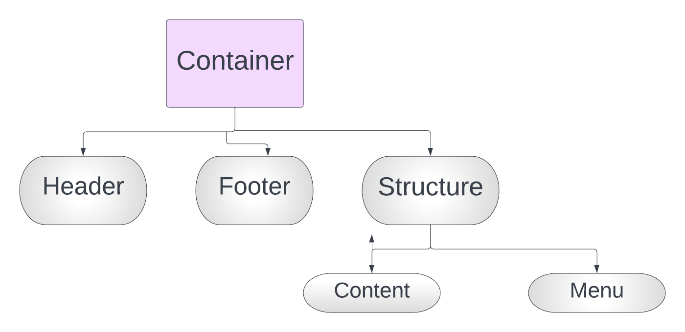

| Attribute | Type |
|---|---|
| Font Family | Sans Serif (throughout) |
| Font Colour | Black |
| No. of images | 6 |
I have incorporated external css sheet (websystems.css) for this website. This made my life very easy. I used same divisions for all webpages and addressed them all at once using the external css document. I have done that using the link tag in the head tag. I have used the 'a' tag in the menu division to link to all 4 webpages.
On the whole, I attempted to put paragraphs under headings and include images below them. In 'My Future' page, I found putting a heading for separate paragraphs unnecessary.
Before designing my pages, what I did was draw an outline of my webpages on a sheet of paper. So basically I defined something known as a 'container', which contains all what I am going to show on my pages. Then, in the container selector, I made header, structure selector,and footer class. In the structure selector, I made content and menu id selectors.
The reason for making the container selector was simple - I wanted a different background outside of my content. So I tagged my body in the css file and inserted a backgroung image, which made it look a little better (at least in my head).Same goes for all other classes.
| Name of id/class | Purpose |
|---|---|
| Container | Everything that I want to show is in the container. |
| header | It has the heading of each webpage. The backgound color I have used is yellow |
| Structure | Contains all the content other than header and footer |
| Footer | Contains my name, my Uni, and the assignment name |
| Menu | Contains the vertical navingation bar |
| Content | Contains the crux of the information I want to display |
I also included images, lists, and tables in my webpages. I think that adds to the aesthetic beauty of a webpage.
I have made the positions of menu and footer fixed. I did so as to assist the user to clearly and easily navigate through my website and fixed my footer so as to always display my details to the viewer.
I have also used the 'meta' tag to the best of my capabilities to make the website as responsive as well. A responsive website is a website which can adjust to any resolition (screen size). In today's World, where everyone uses multiple devices to access websites, I reckon it's is very important to develop websites which can respond to the demand. The media gallery proved to be pretty helpful to me. All I had to do was set the maximum width in the argument,and then everything worked out pretty fine. Following is an image of my webpage viewed on a Samsung Galaxy Pad.
The interesting thing that I have done using the media gallery, is that when the width of the webpage goes below 1245px, it automatically shortens the menu and the size of the content. With this, I have achieved to minimoze any glitches that might occur while accesssing the webiste from smalller devices such as smart phones. If you see the image below, the menu appears a little short.
In the comments page itself, I have used the span tag a few times to make the specific words converted to italic font style. I have done this to put emphasis on certain words.
I wanted my website to have a very neat and normal look. Nothing fancy. So I just used normal colours like yellow background colour for the header, yellowgreen for menu background, and grey for footer background colour. My focus has always been on the content, rather than the decoration. Having said that, I reckon the simplicity of the website enhances its standard.
Another interesting thing I have done with the menu is that I have included the a:hover in the list attribute. When you attempt to move the cursor above that text, the background color and the color of the text changes. This again I feel adds that extra umph of sophistication.
Also, if you hover over my images, you might see what they represent. Overall, I think my webiste has all the required features. It is neat, simple, and elegant (to me at least).